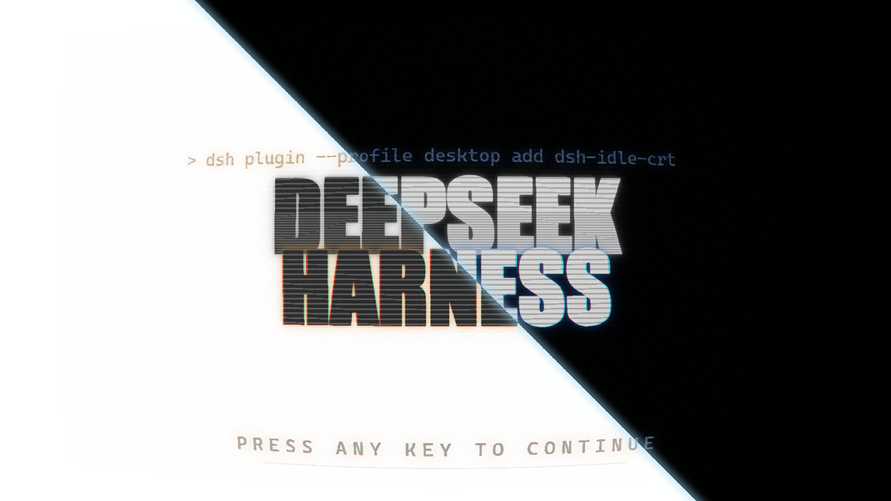

v0.2.7MIT · GPU
IDLE CRT
待机显像管
机器不干活的时候，让它亮着。十分钟没有任务、也没有人碰鼠标键盘，
一块 CRT 板子从黑里浮起来；点一下、或者按一个键，它就收回去。

1600×900 · 60 FPS
INVERSION SWEEP · 14 s / PASS
DEFAULTS
无操作阈值10 min
点亮预热1.4 s
淡入 / 淡出320 / 600 ms
反扫开始4 s
一程 / 停留14 s / 5 s
扫描线强度1.0 ×
COEXIST全屏模态框播放中的视频更高的 z 轴 HUD其他动画插件
01有活干就不出现 宿主实时跟踪会话忙碌
02只认窗口内的输入 移动不算，点击/按键才收
03全 GPU 合成 16.6 ms / 帧，逐帧零 CPU
04与所有插件共存 z 轴爬升，全屏/弹窗让路
05设置里开一页 阈值/预热/扫掠/提示语
06派生自开源闪屏 dsh-splash-crt，MIT
|